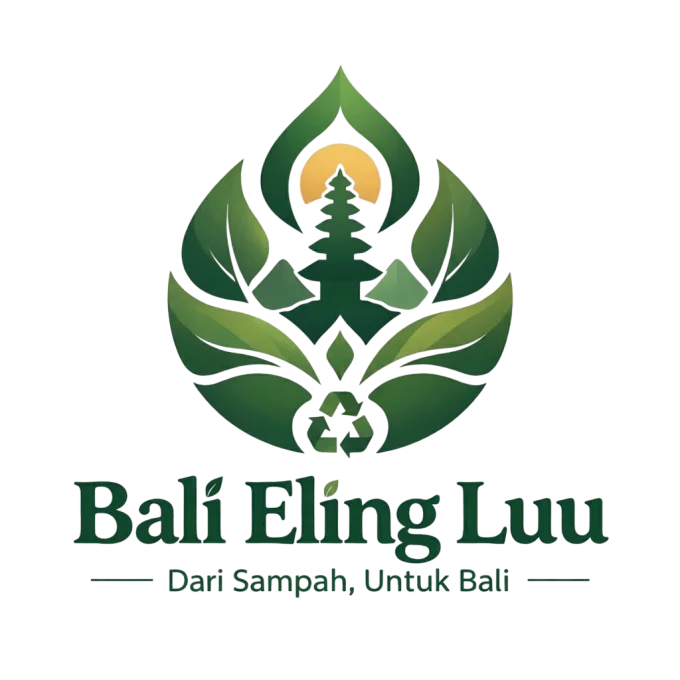
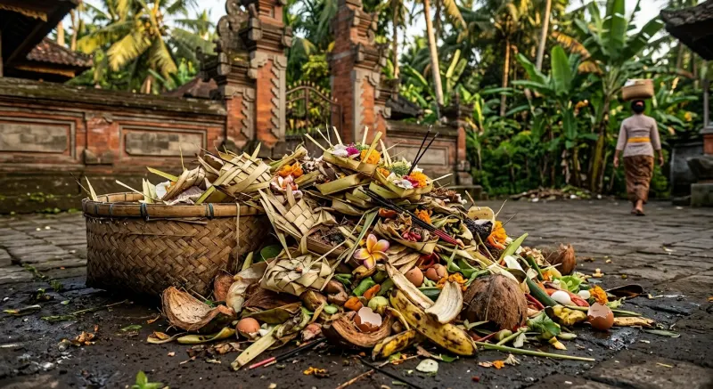
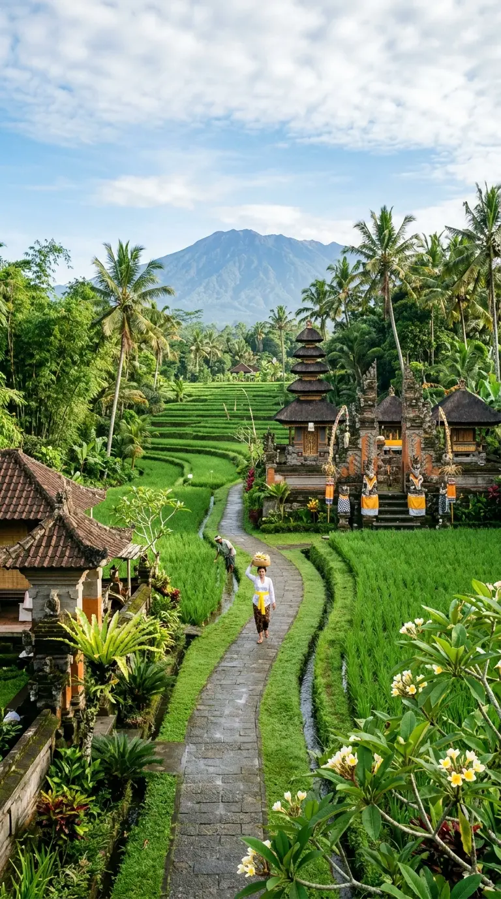
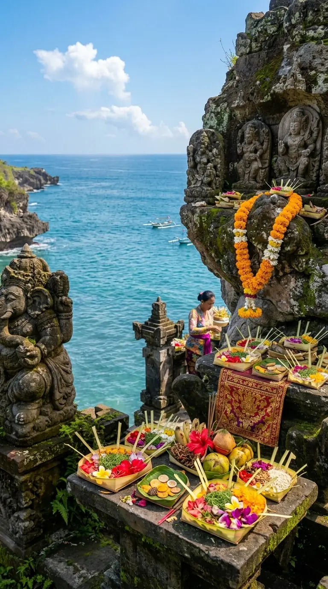
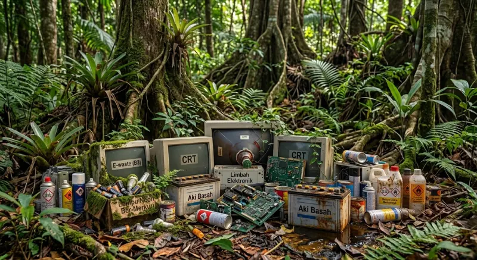

Organik
Sampah yang mudah terurai secara alami.
Contoh: daun, sisa makanan.
Pelajari →
JAGA ALAM, LESTARIKAN BALI
Pindai sampahmu dengan AI Vision cerdas, dapatkan rekomendasi pemilahan sesuai tradisi & regulasi Bali, serta temukan TPS3R dan Bank Sampah terdekat.
Atau cari nama sampah langsung:
Mengapa Penting
Kebersihan lingkungan menentukan kesehatan, kenyamanan, dan keindahan tempat kita tinggal. Dengan memilah sampah dari sumbernya, mengurangi plastik sekali pakai, dan tidak membuang sampah sembarangan, kita ikut menjaga ekosistem Bali tetap sehat.
Panduan Sampah
Empat kategori utama yang perlu kamu pahami sebelum memilah.
Sampah yang mudah terurai secara alami.
Contoh: daun, sisa makanan.
Pelajari →Material yang berpotensi didaur ulang.
Contoh: botol plastik, kaleng.
Pelajari →Tidak dapat diproses lewat jalur daur ulang yang tersedia.
Contoh: tisu bekas, pembalut.
Pelajari →Perlu penanganan khusus, jangan dicampur sampah biasa.
Contoh: baterai, lampu tertentu.
Pelajari →Catatan: Tidak semua barang dalam satu kategori bisa langsung didaur ulang. Selalu ikuti ketentuan dan fasilitas pengelolaan sampah setempat.
Peta interaktif sebaran fasilitas TPS 3R, Bank Sampah unit, dan Drop Box B3 terverifikasi di Bali. Temukan tempat terdekat dari rumahmu dan langsung dapatkan rute Google Maps.
Tips Lingkungan
Kebiasaan paling sederhana untuk mengurangi sampah plastik.
Pilih kemasan yang bisa digunakan ulang atau diisi ulang.
Pisahkan organik, anorganik, residu, dan B3 di rumah.
Bawa pulang sampahmu dari pantai, sungai, dan tempat wisata.
Berperilaku sesuai kesakralan tempat yang dikunjungi.
Manfaatkan barang yang masih layak sebelum membeli baru.
Artikel

Langkah praktis memisahkan sampah tanpa ribet.
Baca Selengkapnya
Checklist sederhana sebelum berangkat.
Baca Selengkapnya
Peran kecil pengunjung untuk ekosistem pesisir.
Baca Selengkapnya
Kenapa baterai dan lampu tak boleh sembarangan.
Baca SelengkapnyaTentang Kami
Bali Eling Luu adalah AI-Powered Environmental Action Platform — platform digital cerdas yang menghubungkan edukasi, pemilahan sampah, komunitas desa adat, direktori fasilitas lingkungan, dan aksi nyata dalam satu ekosistem terpadu. Dari kesadaran menjadi tindakan nyata untuk Bali.
Berlandaskan filosofi kearifan lokal Tri Hita Karana (Palemahan — keharmonisan manusia dengan alam semesta) serta implementasi Pergub Bali No. 47/2019 & Pergub Bali No. 97/2018.